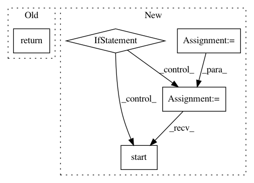

0a3547d8479b66499fb0cb9107273c4f081407f5,tensorboard/plugins/profile/profile_plugin.py,ProfilePlugin,is_active,#ProfilePlugin#,338
Before Change
def is_active(self):
The plugin is active iff any run has at least one active tool/tag.
return any(self.index_impl().values())
After Change
// we"re still not active, launch a thread to check if we"re active and
// release the lock once the computation is finished. Either way, this
// thread returns the current cached value to avoid blocking.
if not self._is_active and self._is_active_lock.acquire(False):
if self._is_active:
self._is_active_lock.release()
else:
def compute_is_active():
self._is_active = any(self.generate_run_to_tools())
self._is_active_lock.release()
new_thread = threading.Thread(
target=compute_is_active,
name="ProfilePluginIsActiveThread")
new_thread.start()
return self._is_active
def start_grpc_stub_if_necessary(self):
// We will enable streaming trace viewer on two conditions:
In pattern: SUPERPATTERN
Frequency: 3
Non-data size: 5
Instances
Project Name: tensorflow/tensorboard
Commit Name: 0a3547d8479b66499fb0cb9107273c4f081407f5
Time: 2019-03-01
Author: nfelt@users.noreply.github.com
File Name: tensorboard/plugins/profile/profile_plugin.py
Class Name: ProfilePlugin
Method Name: is_active
Project Name: andresriancho/w3af
Commit Name: 75d7e3313db6c40a19d48cb9d1b66366d6ff7d8d
Time: 2018-02-05
Author: andres.riancho@gmail.com
File Name: w3af/core/controllers/core_helpers/strategy_observers/thread_state_observer.py
Class Name: ThreadStateObserver
Method Name: crawl
Project Name: mil-tokyo/webdnn
Commit Name: 634c2049b8f95c45495811197346964e0826df2e
Time: 2018-11-18
Author: hidaka@mi.t.u-tokyo.ac.jp
File Name: src/graph_transpiler/webdnn/backend/interface/generator.py
Class Name:
Method Name: generate_descriptor